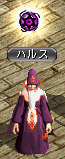
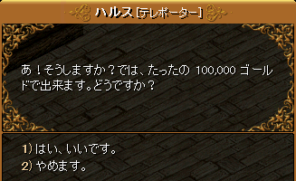
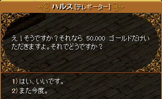
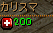
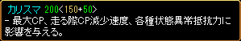
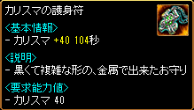

スマグ地下道へのワープ方法
ウィザードギルドのハルスから移動
- 魔法都市スマグのウィザードギルドへ入ります。
- ハルス(45,50)付近に話しかけ、地下道への転送を頼みます。
- 提示された料金を確認し、「はい、いいです。」を選んで支払うと、スマグ地下道へワープします。
 |
|
|
スマグ ウィザードギルド
ハルス
(45.50)付近に5万 or 10万ゴールド払うとスマグ地下道へワープできます。 支払う金額はプレイヤーのカリスマの値によって決定されます。 |
|
 |
カリスマ199以下の場合 10万ゴールド払う |
 |
 カリスマ200以上の場合 5万ゴールド払う |
 |
装備やカリスマの護身符などの支援補正込みで判定 |
 |
Lv100以下のキャラであれば、カリスマの護身符を 古都ブルンネンシュティグ 協会雑貨商人 (75.157)、(89.120)または 冒険家協会ブルンネンシュティグ本部 雑貨商人 (40.27)より1万2480Gで購入できます。 |
B3への進み方
スマグ地下道は、B1 → B2 → B3の順に進みます。地図の水色が出発点、黄色の矢印が道順、赤丸が次の入口または到着地点です。
- B1：南側のポータル(60,89)付近からB2へ。
北東側の(82,21)付近から左下へ進み、通路に沿って右下へ折り返します。その先は左へ回り込み、南側の入口へ進みます。
- B2：左上のポータル(14,28)付近からB3へ。
(104,54)付近に着いたら左上へ進みます。中央の通路を折り返して西側へ回り込み、最後は左端の通路を北へ進みます。
- B3：(20,47)付近に到着。
魔法の網では、レッドアイ護衛兵を倒して光のランプを手に入れ、ウィザードの研究室のミツへ戻ります。
備考
※2015年9月17日アップデートにより、 冒険家協会バー ジョン・マルコ (34.21)から「Lv70～90 スマグ地下道の隠された地下迷宮」を選択してスマグ地下道 Ｂ１へ無料でワープ可能です。